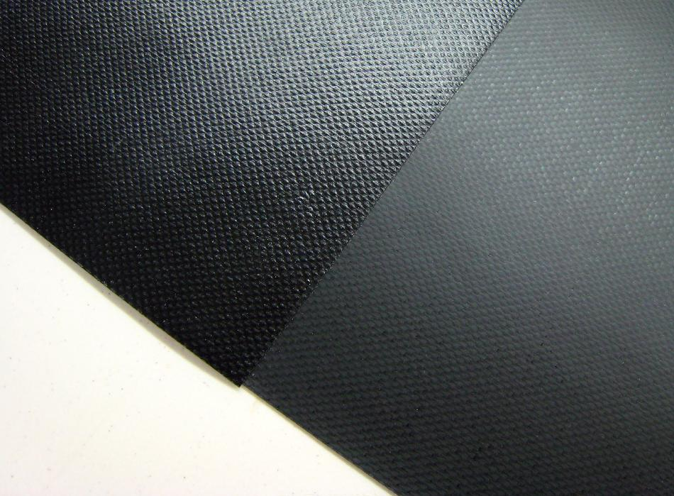

| PVC Skinning (Hull) | Menu Previous Page Next Page |
|

Coverlight and Coverene PVC come with a textured / shiny side and a smooth / dull side. Either side can be used as the outside of the hull and deck. Some builders feel that the dull side is smoother in the water, and also that it's more durable as there is more vinyl at the surface. Some builders use the dull side for the hull and the shiny side for the deck, as this permits the hull and deck overlap at the gunwales to be the same smooth / dull side for gluing. I normally use the shiny side out for both hull and deck as I prefer it's looks and have never experienced any glueing problems.
|
|